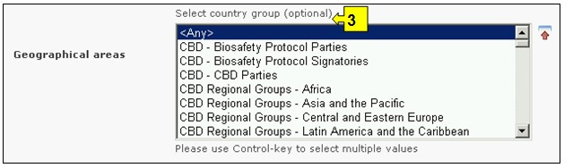
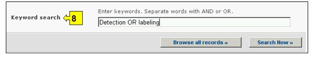
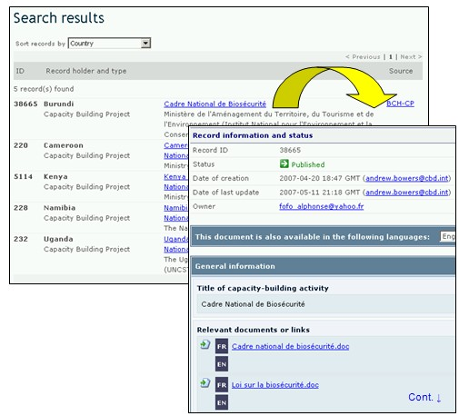

URL: http://bch.cbd.int/database/activities/
En vertu de l’Article 22 du Protocole, les Parties sont demandées de coopérer dans le développement et/ou le renforcement des ressources humaines et de la capacité institutionnelle en vue de la mise en œuvre effective du Protocole. À travers le CEPRB, les Parties et d'autres peuvent avoir accès aux informations sur la création de capacités et d'autres aides pour la mise en oeuvre du Protocole. En plus, les gouvernements peuvent enregistrer leurs besoins et priorités de création de capacité dans le CEPRB.
Un moteur de recherche concernant la création de capacités est accessible depuis le lien dans le menu déroulant Trouver l'information sur la barre de navigation, ou depuis le lien dans le menu du côté gauche de la page Trouver l'information ou depuis le lien dans le texte de Création de capacités dans la même page.

Figure 68
Dans la page Recherche d’information sur Création de capacités, l’utilisateur peut chercher :
1. Des Projets de Création de capacités sur biosécurité ;
2. Des Opportunités de Création de Capacités ;
3. Les besoins et priorités des Pays ;
4. Des Cours de Biosécurité.
Sur la page Recherche d’information sur Création de capacités, il y a six boîtes de critères de recherche offertes pour affiner les recherches dans cette base de données. Chacune a un menu déroulant depuis lequel il est possible de sélectionner le critère désiré. Pour chaque menu déroulant, le choix par défaut est le premier critère en haut de la liste du menu. A droite de chaque boîte, un bouton permet à l’utilisateur d’activer la sélection multiple. Une fois dans le mode sélection multiple il est possible d’ajouter plus de critères à la sélection en cliquant sur le critère approprié tout en pressant sur la touche Ctrl (Contrôle).
Il y a huit boîtes de critères de recherche dans cette page.
 .
.
Figure 69
La Boîte 1 [Type d’aide] permet à l’utilisateur de restreindre la recherche aux pays ou régions demandant ou fournissant l’aide.

Figure 70
La Boîte 2 [Sélectionner un Pays] donne une liste de tous les noms des pays dans un menu déroulant pour que les utilisateurs puissent sélectionner un ou plusieurs pays spécifiques pour une recherche.

Figure 71
La Boîte 3 [Sélectionner une région] liste des régions dans un menu déroulant pour que les utilisateurs puissent sélectionner un ou plusieurs groupes de pays spécifiques pour une recherche. La liste des groupes de pays contient tous les groupes géographiques ou politiques majeurs de pays et permet de restreindre la recherche aux enregistrements soumis seulement par les membres du ou des groupe(s) sélectionnés.

Figure 72
La Boîte 4 [Création de Capacités] permet à l'utilisateur de restreindre une recherche à des catégories spécifiques de création de capacités tel que des projets de création de capacités, des opportunités de création de capacités, des besoins et des priorités des pays et/ou des cours en biosécurité.

Figure 73
La Boîte 5 [Projets, Opportunités, besoins et priorités] permet à l’utilisateur d’appliquer des filtres pour les divers aspects des activités de création de capacités afin de restreindre encore plus la recherche aux enregistrements qui sont spécifiquement en rapport avec le critère sélectionné. Les catégories de filtres sont : (i) Nom du projet, (ii) Domaine de Création de Capacités, (iii) Etat du projet, (iv) Type d’Agence de mise en œuvre, (v) Organisation et (vi) Source de financement.
En sélectionnant un ou les deux filtres du menu déroulant on ouvre des boîtes de recherche additionnelles avec un menu déroulant d’options, chacune en rapport avec l’un des filtres sélectionnés. Plusieurs filtres peuvent être cumulés en utilisant la touche Ctrl (Contrôle) (c’est-à-dire, en cliquant sur le filtre approprié tout en appuyant sur la touche Ctrl).

Figure 74
La Boîte 6 [Formation Offerte] permet à l’utilisateur d’appliquer des filtres par aire thématique et/ou par type d’accréditation pour restreindre encore plus la recherche des enregistrements qui sont spécifiquement en rapport avec le critère sélectionné.
En sélectionnant un ou les deux filtres du menu déroulant on ouvre des boîtes de recherche additionnelles avec un menu déroulant d’options, chacune en rapport avec l’un des filtres sélectionnés. Plusieurs filtres peuvent être cumulés en utilisant la touche Ctrl (Contrôle) (c’est-à-dire, en cliquant sur le filtre approprié tout en appuyant sur la touche Ctrl).

Figure 75
La Boîte 7 [Date de l’enregistrement] permet à l’utilisateur de restreindre la recherche à la date à laquelle le document a été enregistré dans le CEPRB. Le menu déroulant fournit un certain nombre d’options pour limiter La recherche seulement aux enregistrements soumis au cours de la période sélectionnée (par ex. « dernier jour », « dernier mois », « dernière année », etc.)

Figure 76
La Boîte 8 [Recherche par Mot clé] fournit une opportunité d’utiliser des mots clé pour restreindre la recherche. L’utilisateur peut utiliser une syntaxe standard avec des mots clé (combinaison d’opérateurs AND / OR) pour chercher avec plusieurs mots ou parties centrales de mots (par ex. « Importation OR Exportation »). Une recherche effectuée en utilisant des mots clé donne seulement les résultats d’enregistrements contenant exactement le texte recherché et non pas les synonymes possibles qui n’ont pas été insérés (c’est-à-dire, une recherche avec un mot clé unique « maïs » donnera une liste d’enregistrements contenant le mot « maïs » mais non pas les mots « corn » ou « Zea mays »).

Figure 77
La page de recherche présente trois boutons pour produire une liste d’enregistrements. Le bouton (à la fois en haut et en bas de l’interface de recherche) permet à l’utilisateur d’activer une recherche sur la base des critères de recherche sélectionnés dans les boîtes des moteurs de recherche. Les résultats de la recherche sont par défaut classés alphabétiquement par pays. Le bouton Afficher tous les enregistrements (en bas de l’interface de recherche) permet à l’utilisateur d’obtenir une liste de tous les enregistrements dans cette base de données.

Figure 78
Les pages des Résultats de la recherche ont un outil de classement en dessus de la liste d’enregistrements. Celui-ci peut être utilisé pour classer les enregistrements selon des critères spécifiques pour cette catégorie d'information. Notez que les critères de classement changent lorsque l’utilisateur sélectionne des critères de recherche différents.

Figure 79
Exemple. Un utilisateur veut identifier quels projets de création de capacités ont été complétés dans des pays africains. L’utilisateur sélectionne (i) Groupes Régionaux CDB - Afrique dans la boîte Zone géographique, région et (ii) projet de création de capacités dans la boîte Catégories de création de capacités et Filtre par état dans la boîte Projets, opportunités, besoins et priorités. La sélection du filtre ouvre la boîte État, où l’utilisateur sélectionne achevé. Cliquant sur le bouton Rechercher, les résultats de la recherche s’affichent rangés alphabétiquement par pays. L’accès à l’information sur chacune de ces activités est possible en sélectionnant le nom du projet.

Figure 80

Figure 81